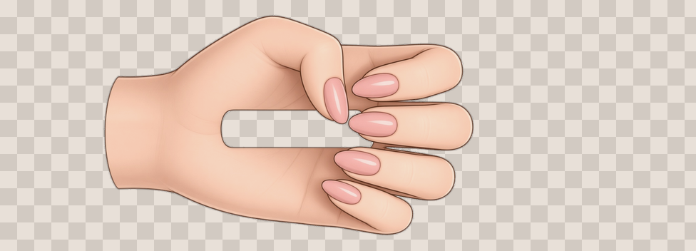
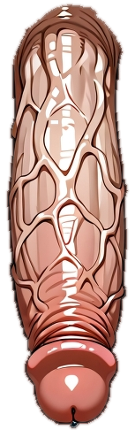
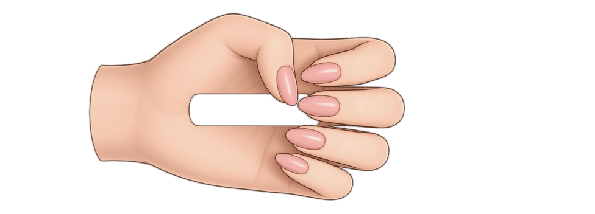
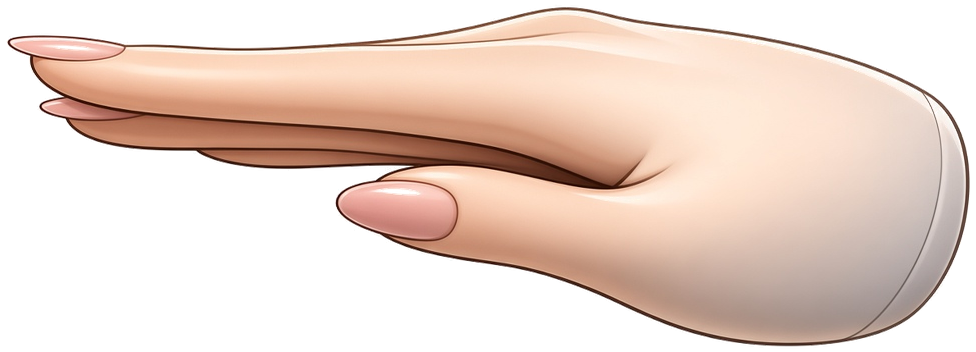

transferina-hand-grip.png
Sprite 976×352 · gesture grip_pole · tient le pôle (membre) au repos sur la poitrine ou le visage.
Remplace ou peaufine le PNG via transferina-hand-grip-paint.md.
Voir le PNG : assets/transferina-hand-grip.png · showcase fond clair : transferina-hand-grip-showcase.png (double-clic si le chat ne montre pas les images)

assets/transferina-hand-grip.png

Sprite seul (damier simulé)
Réf. slap · transferina-hand.png
